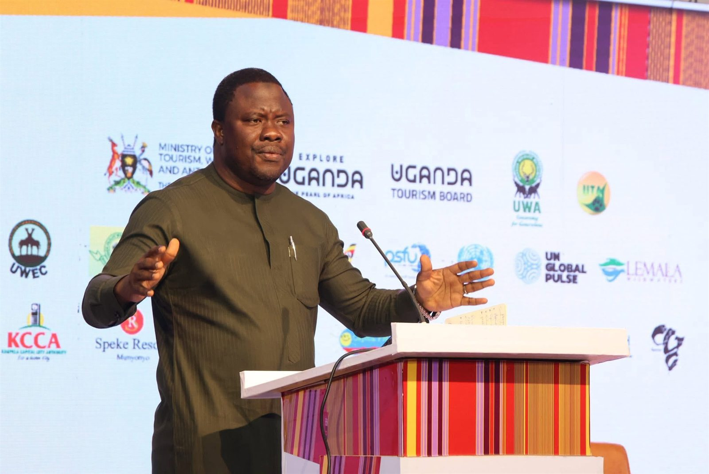
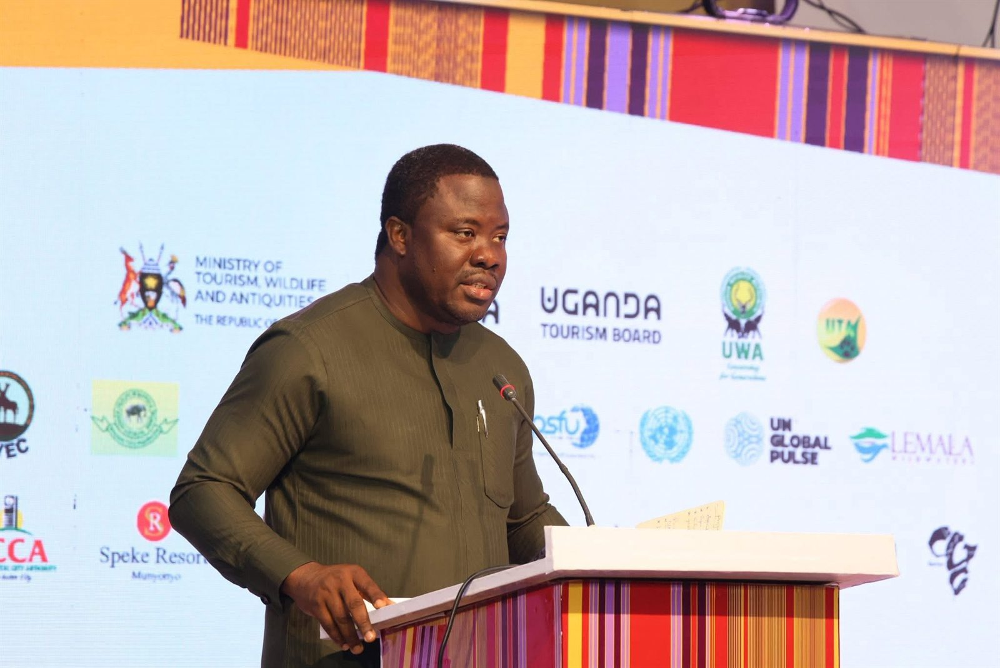
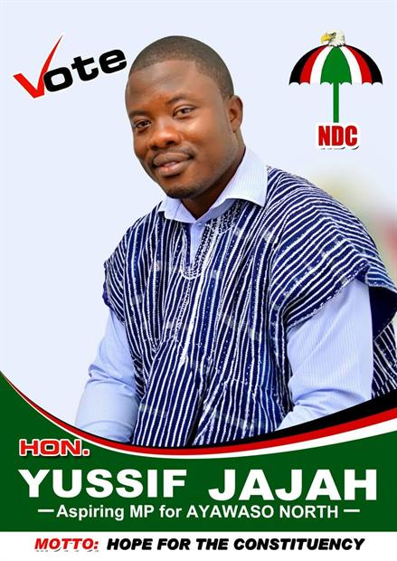

Republic of Ghana · Ayawaso North
Service to the people who raised him.
From the streets of Mamobi, Nima and Accra New Town to the floor of Parliament, Hon. Yussif Issaka Jajah serves his third term as Member of Parliament for Ayawaso North, and the nation as Deputy Minister for Tourism, Culture and Creative Arts.


for Ayawaso North
in the 2020 election
with jerseys & footballs
works under construction

The Member of Parliament
An economist by training, a servant by choice.
Hon. Yussif Issaka Jajah hails from Bole and was raised in the tightly knit communities he now represents. That upbringing shapes everything about how he governs: close to the ground, present at the naming ceremonies and the funerals, and unembarrassed to walk a gutter line in the rain to see a problem for himself.
He brings the discipline of a development finance and energy professional to the work: an MBA from the University of Dundee, an MSc in Energy Economics, an MPhil in Development Finance, and seats on Parliament's Finance and Roads and Transport Committees.
Explore
The story, in chapters.
Keep scrolling




We need these drains urgently, but because the spaces are narrow and encroached, machines cannot enter. That means more manual work and delays.